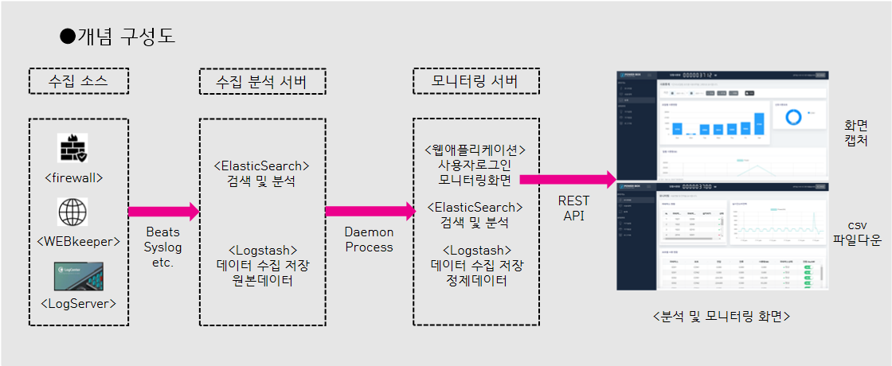

ELK Stack 기반으로 방화벽 데이터와 웹키퍼 데이터, 통합로그관리 시스템에 저장된 데이터를 수집 저장 검색 하는 기능을 제공 (Logstash, Elasticsearch)
ELK Stack 기반으로 수집서버에 수집된 원본데이터에서 데이터 정제 후 추출 저장하는 기능 정제된 데이터를 저장 후 REST API 기반으로 웹 화면에서 분석하는 기능 출발지 IP정보, 목적지 IP정보, 접속사이트 정보, 트래픽 사이즈 정보를 분석 하는 기능을 제공(Logstash, Elasticsearch, Nginx, 모니터링 및 분석 웹) 분석데이터를 CSV파일로 다운로드하는 기능, 분석된 화면을 캡처하는 기능

○ 수집대상시스템 에서 발생하는 일일 100GB 트래픽을 안정적으로 처리할 수 있는 제품 ○ ELK Stack 엔진 기반으로 비정형 데이터를 실시간 수집 분석 시각화처리할 수 있는 제품 ○ 수집저장 서버 1식, 모니터링 분석 서버 1식 (웹 기반 분석 화면 제공)
○ 보안장비, 네트워크장비 등 이기종 시스템을 연동하기 위한, Syslog, beats 등 로그 수집 방식 제공 ○ 데이터 전달을 위한 공통라이브러리인 libbeat를 기반으로 Beats를 활용한 데이터 수집 기능 제공 ○ Logstash 기반 데이터 입출력 기능 제공 Data Input -> Data Filter –> Data Output ○ 대용량 로그를 빠르게 처리할 수 있도록 분석로그는 인덱싱 파일로 저장 ○ Fault Tolerance를 위해 SIGTERM 등 시그널을 받아 종료하게 되면 input을 먼저 종료하고 모든 Output 과정이 끝날때까지 잠시 대기하도록 하는 기능 ○ 일종의 stream filters로 Codecs(json, msgpack, plain text, multiline)를 제공 ○ 정형데이터, 비정형데이터, 위치정보, 메트릭 등 다양한 유형의 데이터를 사용자가 원하는 방식으로 검색하고 결합할 수 있는 Elasticsearch 엔진 제공 ○ 대규모 분석 데이터를 확대하여 추이와 패턴을 살펴볼 수 있도록 지원, 수평적 확장을 통해 매초당 수많은 양의 이벤트 처리할 수 있으며, 클러스터에서 인덱스와 쿼리 배포를 자동화하여 보다 원활한 시스템 운영을 지원
○ 트래픽 데이터를 분석 처리 저장하며, 모니터링 웹 화면을 제공 ○ 숫자, 텍스트, 위치정보, 정형데이터, 비정형데이터 등을 분석 처리 저장 기능 제공 ○ 소스 데이터 전체 또는 단일 데이터 입력 선택 분석 기능 ○ 검색 결과창에서 컬럼별 통계 지원, 결과화면 캡처 기능 ○ 통계분석 차트, 추이분석 차트 등을 지원 ○ 분석 데이터 CSV 파일 형태로 다운로드 기능 ○ 분석 데이터를 일단위로 Index로 저장 처리 보관 ○ 분석 모니터링 화면은 고객 맞춤형으로 커스텀 지원 제공 ○ kibana 기본 웹이 아닌 별도의 웹으로 제공 ○ 주요 기능으로 입력 데이터 선택과 검색조건(검색기간, 출발지IP, 목적지IP, 서비스종류, 트래픽양)을 제공하며, 결과를 분석 하는 기능 제공
○ 로그인 사용자 설정 지원 ○ 분석 결과 csv 파일 다운로드 지원 ○ 분석 화면 캡처 저장 지원
CPU - Intel Xeon 10Core * 1ea 이상 RAM - 128GB 이상 HDD - 1TB 이상 NIC - 1GB 1Port 이상
CPU - Intel Xeon 10Core * 1ea 이상 RAM - 128GB 이상 HDD - 1TB 이상 NIC - 1GB 1Port 이상
100 Devices
20,000,000원(부가세 별도)100 Devices
20,000,000원(부가세 별도)1000 Devices
10,000,000원(부가세 별도)Tel. 010-5458-9315
Email. newkbi@kbisys.co.kr